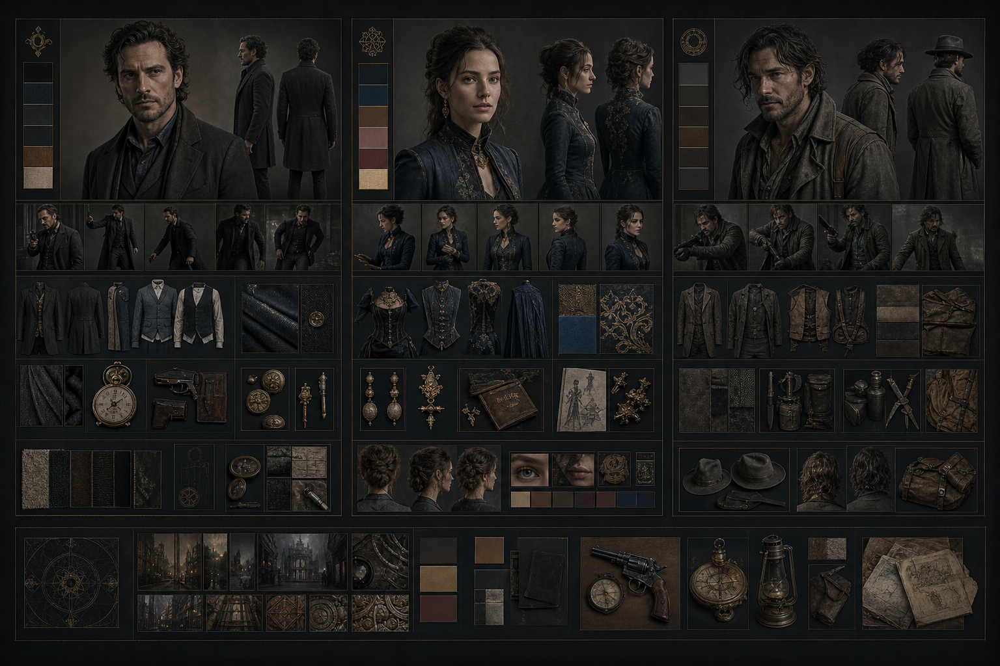
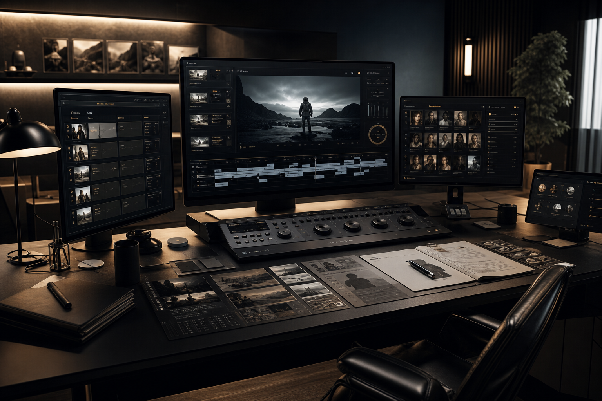
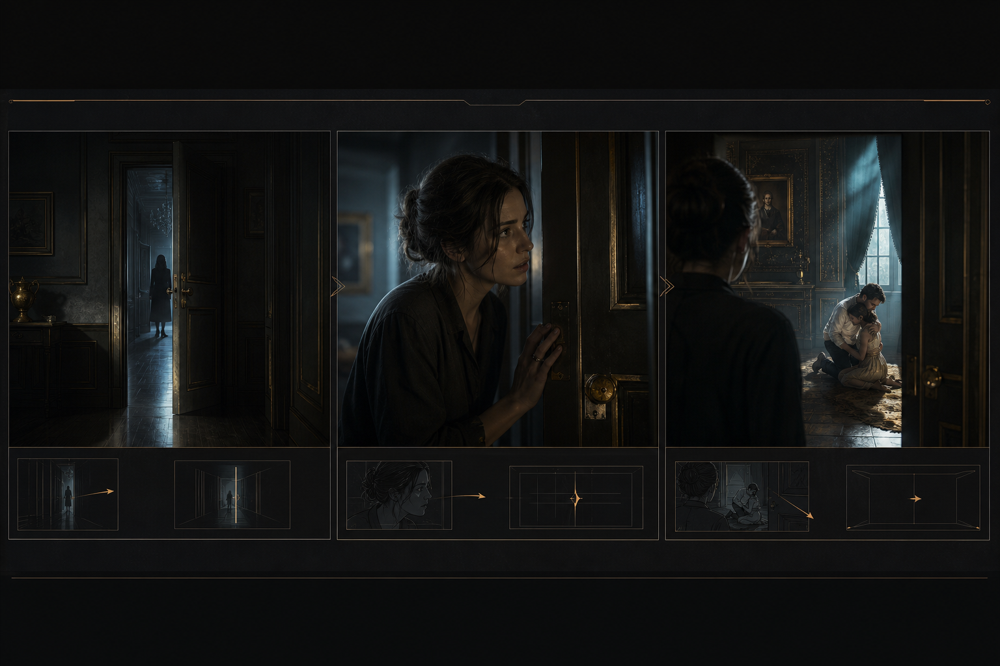
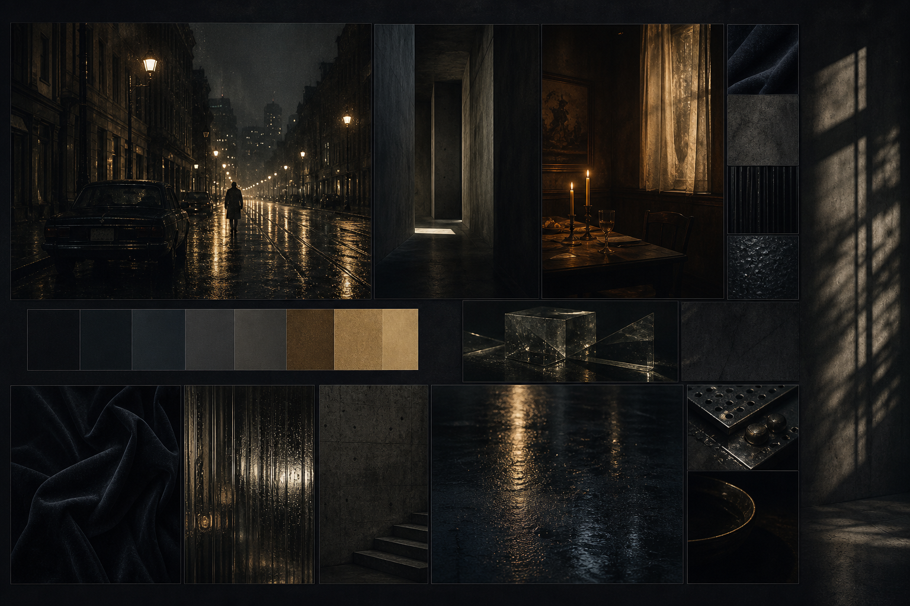

Character board
角色设定板 / 服化道板

角色外观锁定
服装材质统一
多段落稳定复用
跨集一致性
Cinematic pre-production system
不再是给几段提示词就完事。五个 AI 智能体组成真正的影视前期团队——编剧、导演、服化道、音乐总监、分镜师——接力协作，把一个想法拆成角色、场景、段落、音乐和可直接喂给视频工具的生成清单。让专业前制流程，变成创作者能看懂的界面。
创作入口
灵感 · 剧本 · 参考图
一句选题、完整剧本、一张参考风格图，都能启动一个项目。
差异化能力
关键段落故事板增强
只对复杂段落开启分镜预演，控制走位、眼神、推门节奏。
最终交付
可直接生成 · 可剪辑
角色板、场景板、视频提示词、故事板、音乐清单一次拿齐。
Playable prototype
项目总览

段落
04
角色
06
场景
09
状态
Ready
P03 适合故事板增强
推门、停顿、抬眼、真相冲击细节动作需要更精细的镜头控制。
交付清单
创作流程
进行中快捷入口
全部可点How it works
底层是完整的 AI 制片管线——编剧拆剧本、导演讲戏、服化道定资产、音乐定氛围、分镜师写提示词——前台只保留创作者真正关心的内容。
导入灵感或剧本
一句选题、完整剧本或风格参考图都能启动项目——AI 编剧自动判断从哪个入口开始。
锁定平台与审美
选定目标平台、受众画像、风格基准和视频画幅，让后续产出有统一的方向标准。
拆成视频段落
AI 导演自动拆剧情结构、识别角色与场景需求，标出哪些段落值得单独做故事板增强。
生成资产设定板
先把角色、服化道、场景氛围、关键道具变成可复用的视觉资产，再进入镜头阶段。
故事板增强 核心
复杂走位、微表情、转场冲击不再靠运气——用分镜预演把镜头节奏拉稳。
导出完整交付清单
一键拿到角色图、场景图、视频提示词、故事板图、音乐建议，适配主流工具。
Core workspace
这页不支持真实后端，但每一个按钮、面板和弹窗都模拟了完整交互路径，就像在操作一个真实产品。
导演工作台
段落时间线
点击任一段落 · 右侧内容联动切换
当前段落画布

叙事目标
角色 / 场景
建议
资产速览
抽屉联动输出动作
可点核心技术差异
五智能体协作管线
编剧 → 导演 → 服化道 → 音乐总监 → 分镜师，每个角色各司其职，产出可直接串接。
内容驱动反推
不再用固定模板锁死时长和镜头数，Cut 数量由叙事单位数决定、总时长由内容自然延展。
资产优先于镜头
先建角色、场景、道具的可复用资产，再进入生成阶段——整条视频统一世界观。
10 种画幅 · 7 大平台规律
内置抖音 / 快手 / 小红书 / 视频号 / B站 / YouTube / TikTok 平台习惯对照，受众画像和留存节奏统一考虑。
The differentiator
大多数 AI 视频工具只提供单段提示词生成。只有我们对"复杂段落"提供专门的故事板预演机制。
Visual comparison
一段一图 · 直接成片
8 模块分镜 · 精确控制
默认模式
适用于 80% 的叙事段落。一个段落一段完整叙事，多张角色/场景/道具参考图拼接，直接产出可用的视频提示词。轻量、高效、够用。
按需开启
专门服务复杂段落：推门、走位、微表情、眼神、情绪冲击——不是靠抽卡，而是先画分镜再写提示词。
何时该开启故事板
精细动作控制
开门方式、手部细节、走位路径需要预演固定的镜头。
微表情连续
从平静到震惊到愤怒，连续 3 种情绪不能跳脱角色一致性。
情绪转折冲击
从悬念到真相揭晓的瞬间，节奏崩了整个段落就废了。
Asset boards
点击详情按钮打开抽屉，查看角色服化道、场景气氛参考和故事板预演内容。
Character board

Scene board

Deliverables
01
段落化 Seedance / 可灵 / Runway 通用提示词，逐段生成逐段串接。
02
8 模块分镜大图，专为复杂段落减少 AI 抽卡成本。
03
角色设定 PNG + 提示词，保证段落/跨集人物不跑偏。
04
气氛板 PNG + 提示词，空间、光影、材质、情绪统一。
05
原创 + 市面推荐双轨方案，方便 Suno 生成和音乐平台搜索。
06
每段时长、衔接建议、音乐编号对应——直接当剪辑台本用。
Pricing preview
以下为产品方案预览，不代表当前已上线，但骨架和逻辑已就位。
免费
快速体验完整流程，不需要绑定支付方式。
¥68/月
独立创作者的最佳选择，完整功能覆盖日常创作。
¥188/月
小团队、工作室和批量创作者的高阶方案。
FAQ
Positioning statement
Next steps
Action center